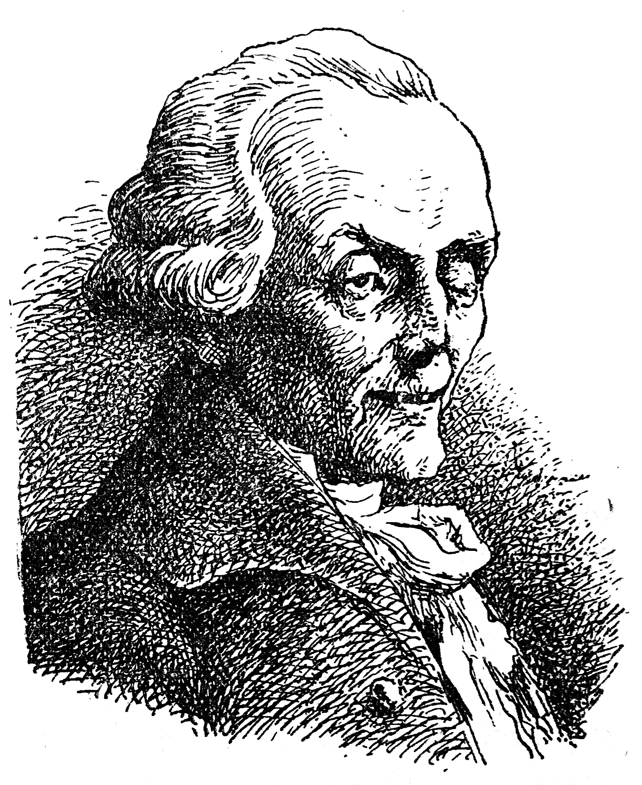

Kiel Kandid renkontis sian malnovan majstron, doktoron Panglos, kaj kio rezultis el tio.
Kortuŝate de kompato pli ol de abomeno ĉe la vido de tiu terura mizerulaĉo, Kandid donis al li la du florenojn, kiujn li estis ricevinta de la honesta anabaptisto Jakobo. La fantomo fikse rigardis lin, ekploris kaj ĵetis sin al li sur la kolon. Timigite, Kandid malantaŭenpaŝis:
― Ho ve! diris la mizerulo al la alia mizerulo, ĉu do vi ne rekonas vian karan Panglos?
― Kion mi aŭdas? Vi, mia kara majstro! vi, en tia abomena stato! Kia malfeliĉo okazis al vi? Kial vi ne plu estas en la plej bela el la kasteloj? Kio okazis kun F-ino Kunegond, la plej perfekta el ĉiuj junulinoj, la ĉefverko de l' naturo?
― Mi ne plu povas elteni, diris Panglos.
Tuj Kandid kondukis lin en la stalon de la anabaptisto, kie li manĝigis al Panglos iom da pano; kaj kiam ĉi tiu lasta rebonigis sian farton:
― Nu, demandis Kandid, Kunegond?
― Ŝi mortis, respondis Panglos. Ĉe tiuj vortoj, Kandid svenis; lia amiko rekonsciigis lin per iom da malbona vinagro, kiu hazarde troviĝis en la stalo. Kandid remalfermis la okulojn:
― Kunegond mortis! Ha! plej bona mondo, kie vi estas? Pro kia malsano ŝi mortis? Ĉu ne pro tio, ke ŝi vidis min forpelata el la bela kastelo de sinjoro ŝia patro per fortaj piedbatoj?
― Ne, diris Panglos; ŝi havis la ventron tratranĉatan de bulgaraj soldatoj, post kiam ŝi estis seksperfortita, tiom, kiom estas eble; ili disrompis la kapon al sinjoro ŝia patro, kiu volis defendi ŝin; la barona sinjorino estis dispecigata; mia kompatinda zorgato havis la saman traktadon kiel la fratino; kaj el la kastelo ne restas ŝtono sur ŝtono, ne restas unu garbejo, nek unu ŝafo, nek unu anaso, nek unu arbo; sed ni estis bone venĝataj, ĉar la Abaroj faris la samon en apuda baronejo, kiu apartenis al bulgara sinjoro.
Ĉe tiu parolado, denove Kandid svenis; sed, rekonsciiĝinte kaj dirinte ĉion dirindan, li informiĝis pri la kaŭzo kaj la efiko, kaj pri la sufiĉa kialo, kiu metis Panglos en tian mizeran staton.
― Ho ve! diris la lasta, estas la amo; la amo, la konsolanto de l' homa speco, la konservanto de l' universo, la animo de ĉiuj sentemaj estuloj, la juna amo.
― Ho ve! diris Kandid, mi ĝin konas, tian amon, tiun reĝon de la koroj, tiun animon de nia animo; kaj ĝi havigis al mi nur unu kison kaj dudek piedbatojn sur la postaĵon. Kiel tia bela kaŭzo povis produkti en vi tiel abomenan efikon?
― Ho kara Kandid! vi konis Paket, tiun beletan servistinon de nia plejnobla baronino; en ŝiaj brakoj mi ĝuegis kiel en paradizo kaj tio produktis la inferajn turmentojn, kiuj min forkonsumas; ŝi estis infektita kaj pro tio eble mortis. Paket ricevis tiun donacon de tre klera monaĥo, kiu kutimis ĉion kontroli ĉe la fonto: li ja ricevis la malsanon de maljuna grafino, kiu ricevis ĝin de kavaleria kapitano, kiu dankis ĝin al markizino, kiu prenis ĝin de jezuito, kiu, dum sia noviceco, kaptis ĝin rekte de unu el la kunuloj de Kristofo Kolumbo. Mi mem povos transdoni ĝin al neniu, ĉar mi mortiĝas.

Panglos
― Ho Panglos, ekkriis Kandid, jen stanga genealogio! ĉu la diablo ne troviĝas ĉe la komenco?
― Tute ne, rerespondis ĉi tiu granda homo; ĝi estis nepre necesa malsano en la plej bona mondo, ĝi estis necesa rimedo. Ja se Kolumbo ne estus kaptinta en iu insulo de Ameriko tiun malsanon, kiu putrigas la fonton de la nasko, kiu ofte eĉ malhelpas la naskon, kio evidente tute kontraŭas la celon de la naturo, ne ne havus la ĉokoladon nek la koĉenilon; necesas ankaŭ atenti, ke ĝis hodiaŭ, sur nia kontinento, tiu malsano, kiel la interargumentemo, karakterizas nin. La Turkoj, la Hindoj, la Persoj, la Ĉinoj, la Siamanoj, la Japanoj ĝin ankoraŭ ne konas; sed ekzistas sufiĉa kialo por ke siavice, post kelkaj jarcentoj, ili ankaŭ ĝin konos. Dume, ĝi mirinde progresis inter ni, kaj precipe en tiuj grandaj armeoj, konsistantaj el honestaj dungitoj, bone edukitaj, kiuj decidas pri la sorto de la Ŝtatoj; oni povas certigi, ke, kiam tridek mil viroj enviciĝe batalas kontraŭ samnombra armeo, ambaŭflanke estas proksimume dudek mil sifilisuloj.
― Tio estas admirinda, diris Kandid; sed necesas, ke vi resaniĝu.
― Nu, kiel mi povus? diris Panglos; mi estas tute senmona, amiko, kaj, sur la tuta amplekso de ĉi tiu terglobo, ni ne povas ricevi senpage ian ajn kuracilon, krom se iu pagas donace por ni.
Ĉi lasta diro decidigis Kandid; li iris al la bonfarema anabaptisto Jakobo, genuiĝis antaŭ li, kaj faris tiel kortuŝan priskribon pri la stato de sia amiko, ke la bonulo ne ŝanceliĝis kompate helpi doktoron Panglos; li kuracigis lin per siaj elspezoj. Dum la resaniĝo Panglos perdis nur unu okulon kaj unu orelon. Li havis belan skribmanieron kaj konis perfekte aritmetikon. La anabaptisto Jakobo faris el li sian libroteniston. Post du monatoj, devigate veturi al Lisbono pro komercaj aferoj, li veturigis en sia ŝipo la du filozofojn. Panglos klarigis al li, ke ĉio estis kiel eble plej bona. Jakobo ne havis saman opinion.
― Ŝajnas, li diris, ke la homoj iom difektis la naturon, ĉar ili ne naskiĝis lupoj, kaj ili fariĝis lupoj. Dio donis al ili nek kanonon, nek bajoneton por sin interbuĉi. Same mi povus argumenti pri la bankrotantoj kaj la juĝistaro, kiu kaptas la bienojn de la bankrotantoj por senigi je ili la kreditantojn.
― Ĉio tio estis nepre necesa, rebatis la unuokula doktoro, kaj la apartaj malfeliĉoj faras la ĝeneralan feliĉon, tiel, ke ju pli estas da apartaj malfeliĉoj, des pli ĉio statas bone.
Dum li rezonadis, la vetero malheliĝis, blovis la ventoj el la kvar anguloj de l' mondo, kaj la ŝipo estis atakata de plej terura uragano, kiam estis videbla la haveno de Lisbono.